ios setup
There are a number of tutorials about ofxiPhone and development. We've tried to make it as easy as possible to get your code up and running on the iPhone as quickly as possible, but there's a ton of information to cover. If you need more help after following this tutorial, be sure and check out these others, or check out the iPhone section of the openFrameworks forum.
/////////////////////////////////////////
ofxiPhone "quick"start tutorial
Setting up your iPhone with Xcode and Apple can either be really easy, or a total nightmare. Apple has made a lot of changes lately to make the process smoother. Hopefully this document will help ease the process further. I should note that apple changes and updates this process ALL THE TIME, so this might not be 100% accurate at your time of reading, but hopefully it will be close enough. If not, there's always the forum to look to for help, or google.
The first bit of this tutorial is for if you haven't yet gotten your provisioning profile from apple set up. If you have gotten it all set up, click here to skip that part.
First go to developer.apple.com, create an account if you do not already have one, and then apply to become an iPhone licensed developer.
After paying the $99 fee, you should receive an email with an activation code. If you click on the code in the email, it should take you to this page:
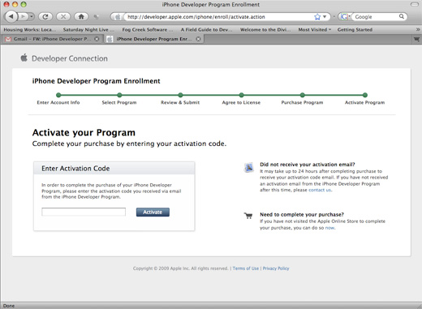
Your code will probably have been automatically put into the text box, but if not, copy/paste it in, and hit Activate.
The next time you return to the developer.apple.com page, it will look like this. Click on the iPhone Developer Program Portal link in the sidebar.
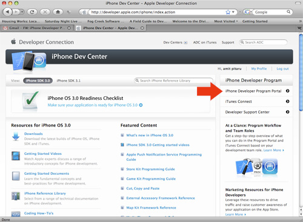
This will bring you to the provisioning profile section of the website. This is where you will set up your various provisioning profiles. Provisioning profiles allow you to digitally sign your code, which will allow you to put it on devices of your choosing, or release the program in the app store or via ad hoc distribution. For now, we are just going to cover the steps involved with getting the code onto your device (and leave the selling your app steps for another time).
Click on the Launch Assistant button to start the provisioning assistant.
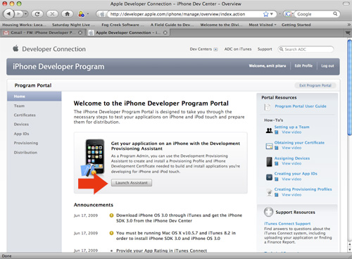
Read the information and continue.
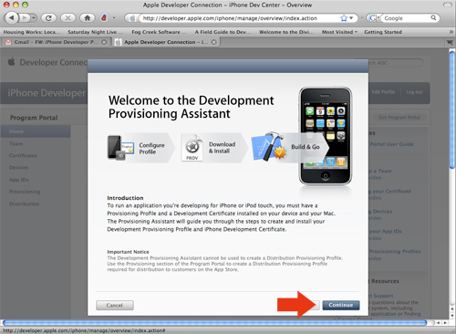
Type in the name of this App ID description. This is purely for your reference in identifying the profile, so you can call it whatever you want.
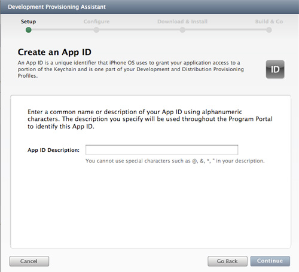
Next you will have to enter the information for your testing device (your iPhone or iPod Touch that you will install your apps on.) It is possible to register multiple devices later, but Apple asks you to register one now. For the description, you can type whatever you want. I recommend just typing in the name of the phone. The Device ID number is available from Xcode via the instructions under the device ID box. Another way to get to this information is to plug your device into iTunes and click on the 'serial number' field on the summary page. This will show the UDID#, but it is not a great way to do it as you won't be able to copy/paste the number.
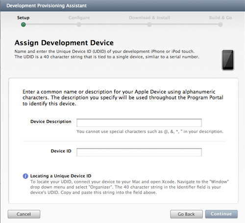
If you do get the device ID through Xcode, this is where it is and what the organizer window looks like:
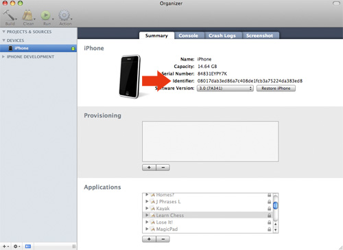
Next you will have to generate a certificate signing request. This part can get a little hairy.
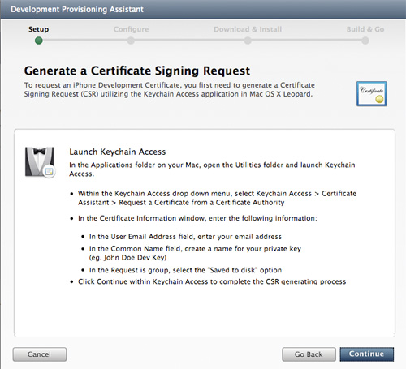
First you will have to launch the Keychain Access application on your computer. It's located here:
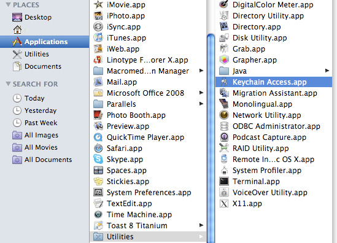
Then go to the Keychain Access / Certificate Assistant / Request a Certificate from a Certificate Authority menu item.
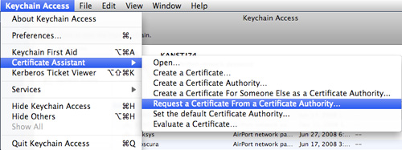
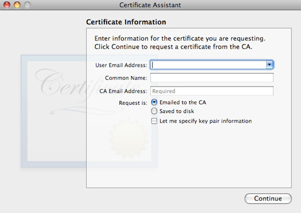
Make sure you click on the 'saved to disk' bubble, so that you don't have to enter a CA Email Address.
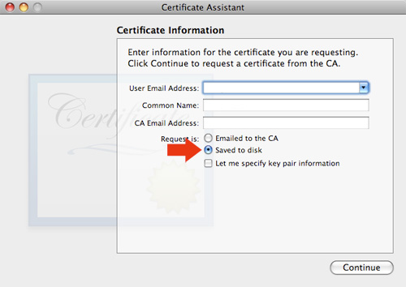
Fill out the rest of the information, hit continue, and save the certificate somewhere on your computer that you will remember. Then, it's back to the the provisioning assistant.
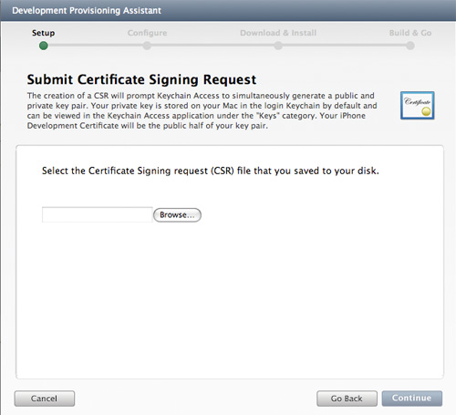
Click the browse button and find the certificate you just saved. After that is successful, you will have to name your provisioning profile. Again, you can name it anything. I recommend naming it [your name] dev. Since this will be your development profile. Hit Generate when you're done.
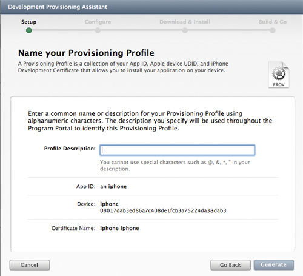
Download the profile when prompted, and then double click on it.
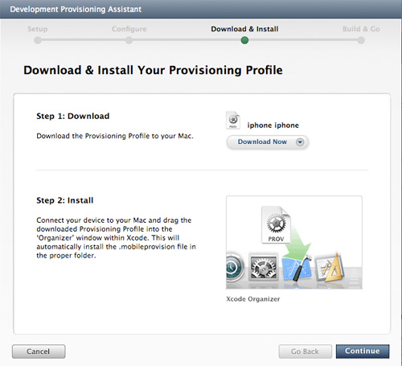
Double clicking on your profile should open up Xcode and add it to your device. If it doesn't open Xcode, drag the provision to Xcode. If it doesn't add it to your device, it's possible you mistyped your device's UDID. This can be fixed after you've finished going through this tutorial by going back to your program portal, going to the 'devices' tab, and changing the id in there, and then re-downloading your profile in the distribution tab.
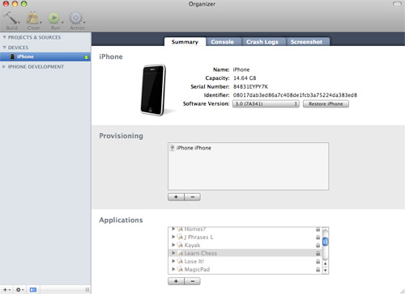
And now again, back to the provisioning assistant! Hit continue.
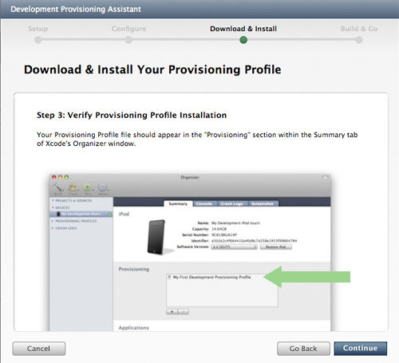
Download your Development certificate, and save it somewhere memorable.
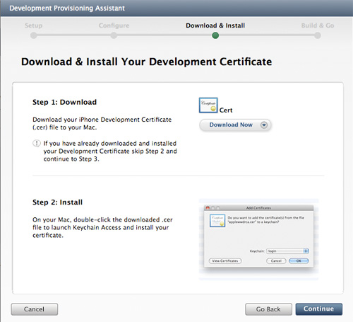
Hit continue a bunch more times until the Assistant is over. You're almost there!
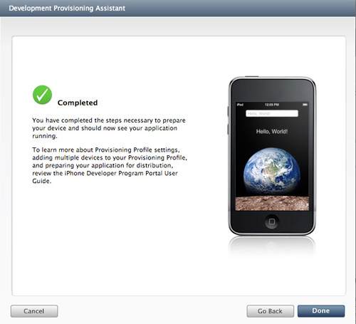
Hit 'Done'. You should now be in the program portal. Click on the 'App ID's' tab in the left sidebar.
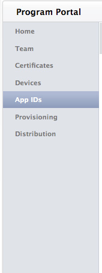
Scroll down until you see this box:
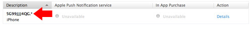
Copy the random letters and numbers below description. (don't copy the .* part, just the letters and numbers, this will be important in a few more steps).
Now, download the iPhone distribution from openframeworks.cc/download. Navigate to one of the example applcations. I picked the Touch/Accel example.
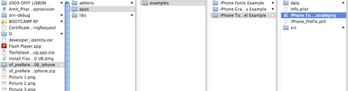
Open it up.
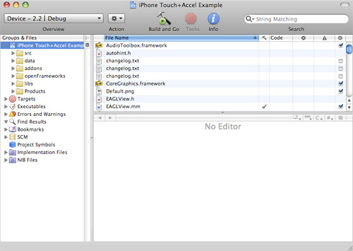
Click on the arrow next to 'Targets', and then double click on 'iPhone oF'.
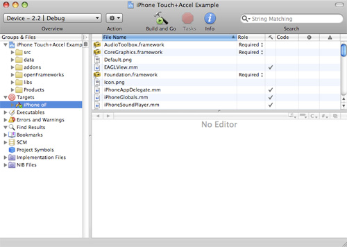
The window that opens should look like this. Click on 'Build' from the choices up top.
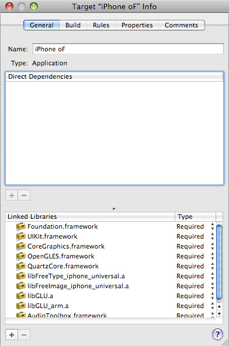
In this window, click on the Configuration, and select All Configurations.
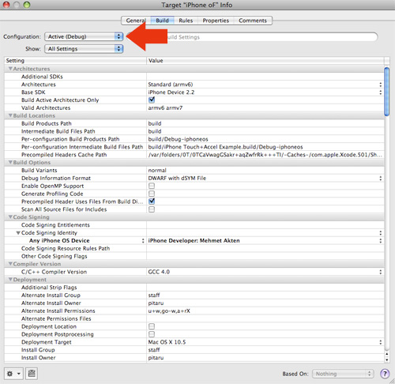
Then go down to where the Code Signing Identity line is. Across from Any iPhone OS Device, click on where it says iPhone Developer: Mehmet Akten
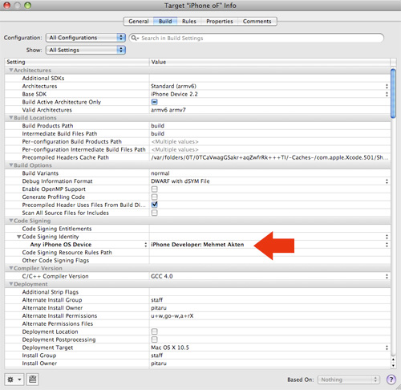
Select 'iPhone Developer' from the automatic profile selectors. This should make the current automatic selection be your profile.
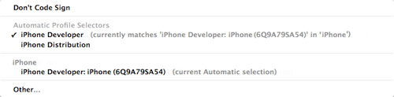
At this point you might also want to rename the project. You might especially want to rename it if there are spaces in the title. Since we released ofxiPhone, Apple changed their rules about spaces in app titles (you cannot have them), and compiling without removing the space will produce an error. (Changing the name from 'oF iPhone' to 'oFiPhone' will do for now).
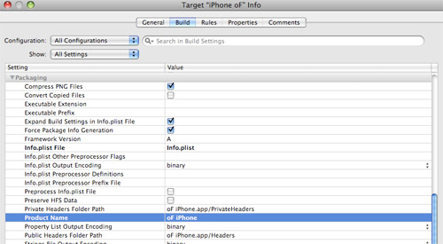
Close that window, and click the triangle next to the data folder. Double click on the info.plist file.

Replace the part that says 'com.msavisuals' with the random numbers and letters you copied from the program portal a billion steps ago.
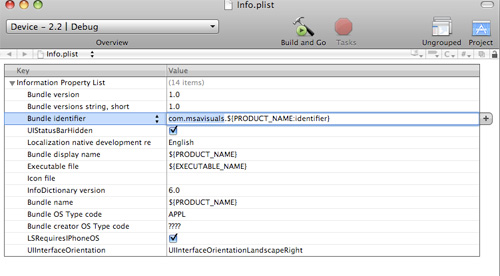
It looked like this if you don't remember:
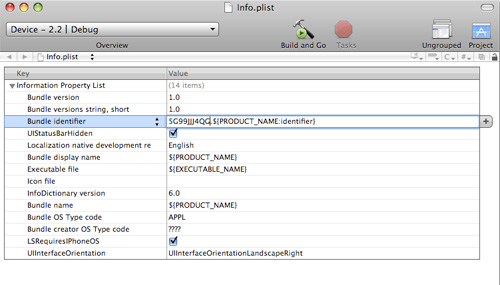
Once that's in, close and save the plist file, and hit Compile. Hopefully everything should just work! If you are on snow leopard with the new SDK and we haven't updated the examples yet you may need to change your base SDK to 3.0 so that it's not missing. This can be done in the target settings. Also, you will have to click on where it says 'device -- 2.2 | debug' in the screenshot above, and change that to Device -- 3.0 | Debug.
If everything works properly, Xcode will ask to codesign from your keychain. Hit 'Always Allow'.

See... Not so bad... Now go make something awesome!